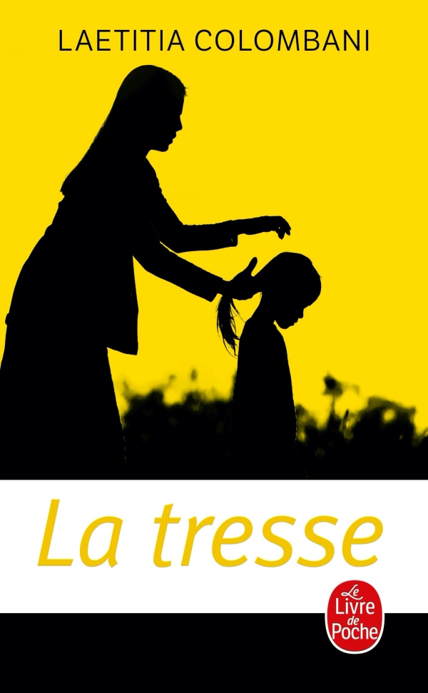

I LOVE skiing. My father being a ski teacher, I grew up in the Swiss mountains and participated in competitions. I really like going to see the articles and videos on ski races, like on SRF News for example!
I like art in all its forms, whether it's dancing, singing, painting, or creating music with my voice and piano. In parallel, I enjoy practicing sports like volley-ball, skiing, and swimming. Spending time with my friends is essential to me.
My passion is reading above all else!! I particularly love the writing style of Jean-Claude Mourlevat or Stephen King. But my favorite book remains, above all, 'La Tresse' by Laetitia Colombani. Otherwise, I really like learning languages: for the moment I master 6 and I intend to learn a 7th!!!
As a first-year student at IESEG, I am dedicated to a future filled with academic success, international exposure, and networking. My goal is to excel in my studies, explore global opportunities and build a strong professional network. My vision includes entrepreneurial ventures, social impact projects, and a focus on career advancement. I particularly have a keen interest in luxury hotel management. The IESEG platform will be my springboard towards lifelong learning and meaningful contributions to society, with a particular focus on the world of luxury hospitality.
Here is my CV (French version)